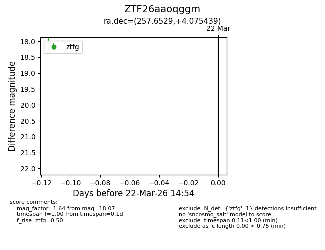
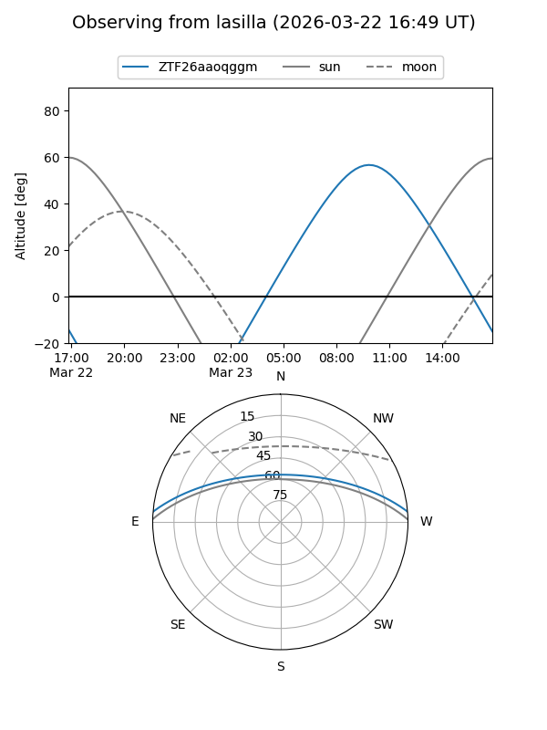
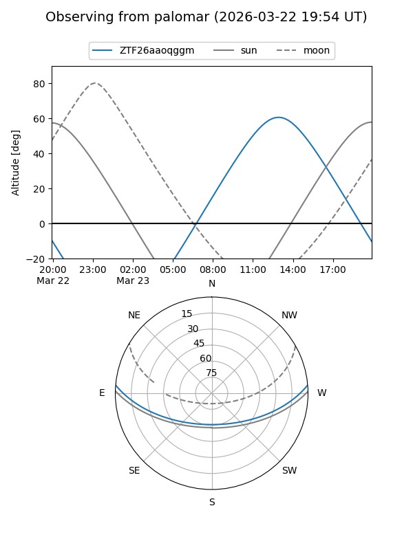

ZTF26aaoqggm
Target ZTF26aaoqggm at 2026-03-22 14:56
Aliases and brokers:
FINK: link
Lasair: link
ALeRCE: link
alt names
ZTF26aaoqggm (ztf,fink_ztf)
Coordinates:
equatorial (ra, dec) = 257.6529,+4.07544
equatorial (HMS+DMS) = 17:10:36.69,+04:04:31.58
galactic (l, b) = (24.7069,+24.23496)
Flags:
Photometry:
last ztfg=18.07
1 ztfg detections
Lightcurve

Visibility


Additional plots